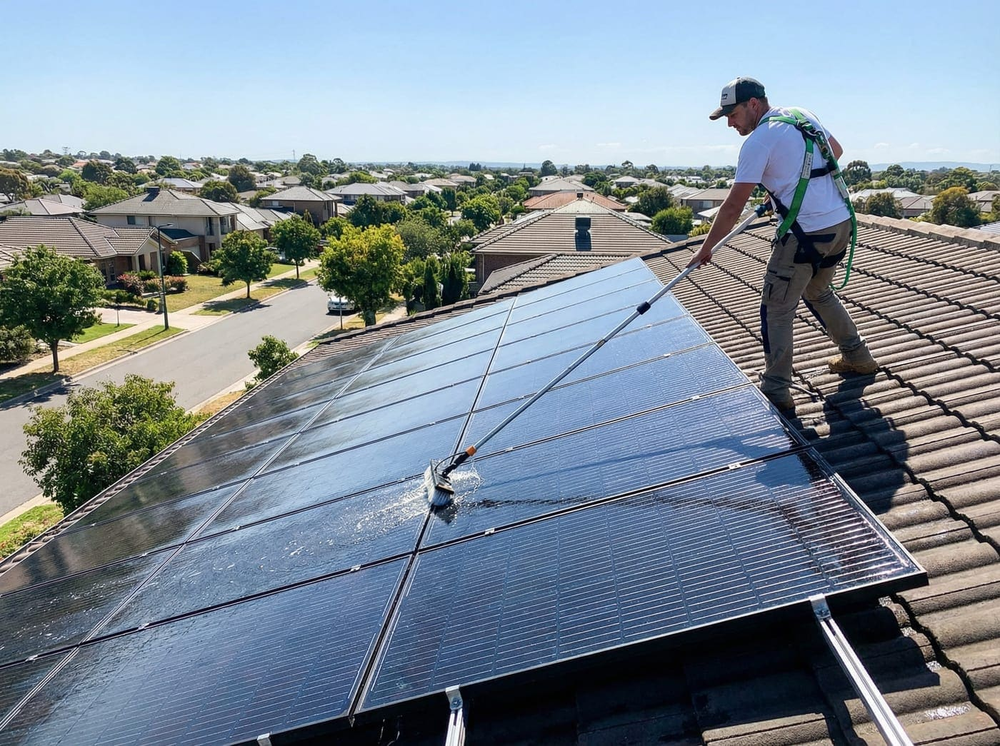

Expert advice for Lincoln and Kearney, Nebraska homeowners — written by your local exterior cleaning team.

Nebraska's harsh seasons — from pollen-heavy springs to dusty summers — make windows dirty faster than most homeowners expect. Find out the right schedule for your home.

Using the wrong method on the wrong surface can cause serious damage. We break down the difference and tell you exactly when to use each for your Kearney or Lincoln home.
Professional holiday lighting books up fast in Nebraska. Here's exactly when to secure your spot so your home is ready before the rush — and before the cold sets in.

Clogged gutters heading into a Nebraska winter can mean foundation damage, roof leaks, and torn gutters. Learn the five warning signs and when to act before freeze season hits.

Dirty panels can lose 15–25% of their energy output. Nebraska's agricultural dust, heavy pollen, and hard water make regular solar panel cleaning essential to protect your investment.
Not all window cleaners are created equal. Use this checklist — purified water systems, insurance, rain guarantees, and more — to hire the right company in Lincoln, NE.
Soft washing uses low pressure and biodegradable solutions to safely remove algae, mold, and grime without damaging siding, paint, or landscaping. Here's how it works.

From pre-treating oil stains to the final rinse, here's exactly what a professional driveway wash looks like — and why spring is the best time to do it in Nebraska.
Prices vary by linear footage, stories, clog severity, and more. Here's a transparent breakdown of gutter cleaning costs in Nebraska — and what's included in our service.

Windows, siding, gutters, and driveways — learn how bundling all four exterior services saves you money and keeps your Nebraska home looking its best year-round.
Ready to book? Get your free quote from Shark Exterior today.
Get Your Free Quote